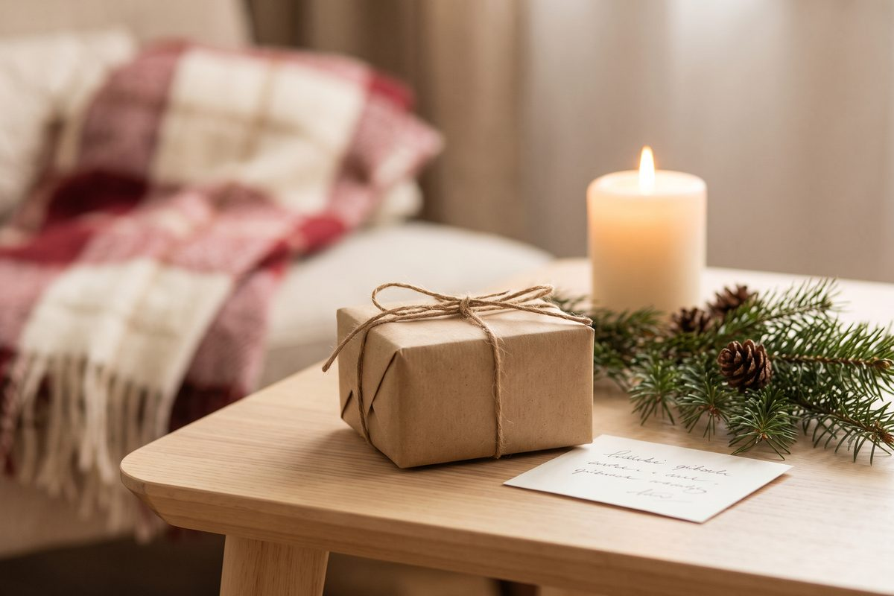
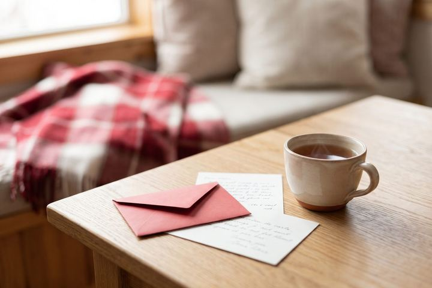
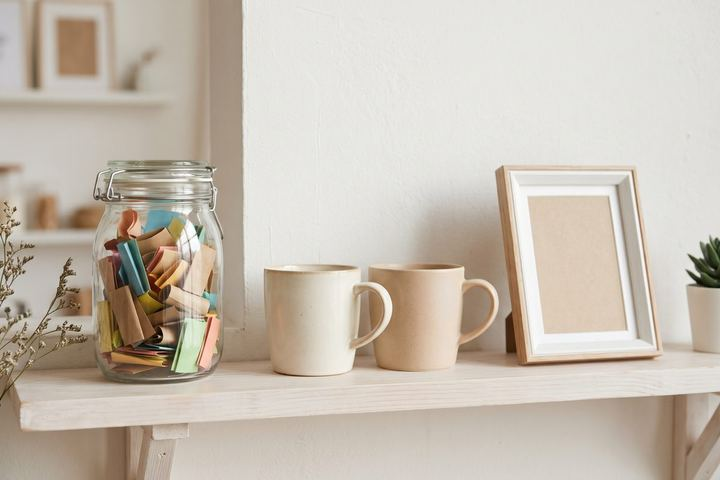

Résolutions de couple : 10 idées simples qui tiennent vraiment
Deux ou trois petites promesses à deux valent mieux qu'une longue liste : méthode, dix idées concrètes et astuces pour tenir.
Lire l'article →Le blog de Cupidon
Rendez-vous, jeux, cadeaux, petits rituels : piochez une idée, testez-la ce soir, et recommencez.
La carte du jour
Tirez une idée à vivre à deux
Rendez-vous
Ce soir, pique-nique dans le salon, bougies comprises.

Expériences, jeux, souvenirs à garder : nos coups de cœur pour tous les budgets, faits maison ou à commander.
Lire l'article → Complicité
ComplicitéDeux ou trois petites promesses à deux valent mieux qu'une longue liste : méthode, dix idées concrètes et astuces pour tenir.
Lire l'article → Complicité
ComplicitéPourquoi la complicité s'efface et comment la retrouver par petites touches : gestes simples, rire, dialogue et rituels à deux.
Lire l'article → Jeux
JeuxJeux gratuits, jeux en boîte ou jeu en ligne : une comparaison sincère pour choisir comment jouer à deux.
Lire l'article →
Saint-ValentinMoments à deux, jeux, souvenirs et idées maison : des cadeaux de Saint-Valentin pour un couple qui veut sortir de la routine.
Lire l'article → Noël
NoëlExpériences, jeux à deux, souvenirs et idées maison : une sélection pour offrir du temps plutôt qu'un objet.
Lire l'article → Noël
NoëlVingt-quatre petites attentions pour arriver à Noël plus proches : matériel, idées de cases et astuces pour tenir jusqu'au bout.
Lire l'article → Cadeaux
CadeauxQuoi offrir à un couple pour un anniversaire, Noël ou juste pour faire plaisir ? Nos meilleures idées, pour tous les budgets.
Lire l'article →Des idées d'activités à vivre en couple pour rendre les fêtes plus complices et chaleureuses.
Lire l'article →
BudgetFaire plaisir à un couple sans se ruiner, c'est possible. Voici nos idées à petit budget.
Lire l'article → À la maison
À la maisonTransformez une soirée ordinaire en vrai moment à deux, bien au chaud, sans dépenser.
Lire l'article → Anniversaire
AnniversaireUn an d'amour, ça se célèbre. Nos idées pour marquer votre premier anniversaire à deux.
Lire l'article →Notre cadeau à vous
52 idées de rendez-vous, 80 questions, des jeux et des défis à vivre à deux : recevez notre carnet à imprimer gratuitement en rejoignant la lettre de Cupidon.
Recevoir le kit gratuit